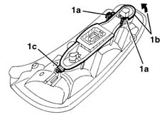
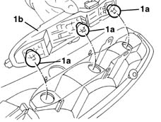

5540A50 tail-light bulb (one), lh or rh - replace
- Path
- Procedures > 55 ELECTRICAL EQUIPMENT > 5540 EXTERIOR LIGHTING > 5540A lighting > 5540A50 tail-light bulb (one), lh or rh - replace
- Kind
- repair procedure (removal / refitting; the operation number is the code)
- Applies to
- all engines; all production periods
- Interactive page
- https://sloeber94.github.io/elrnDB-lYpsln/en/#/2429405
Applies to: all engines; all production periods
 Removing
Removing
 Refitting
Refitting5540A44 l/h or r/h tail light (one) - r+r
1. Release retainers (1a) and raise bulb holder (1b); then release from retainer (1c).

Applies to: all engines; all production periods
1. Remove the bulb (1a) by removing from the bulb holder (1b) (bayonet mount).

Applies to: all engines; all production periods
Refitting
RemovingCheck the operation of the bulb.
Refit the bulb in the bulb holder.
Refit the bulb holder by doing up the retainers.
5540A44 l/h or r/h tail light (one) - r+r
Check the operation of the rear light cluster lights.